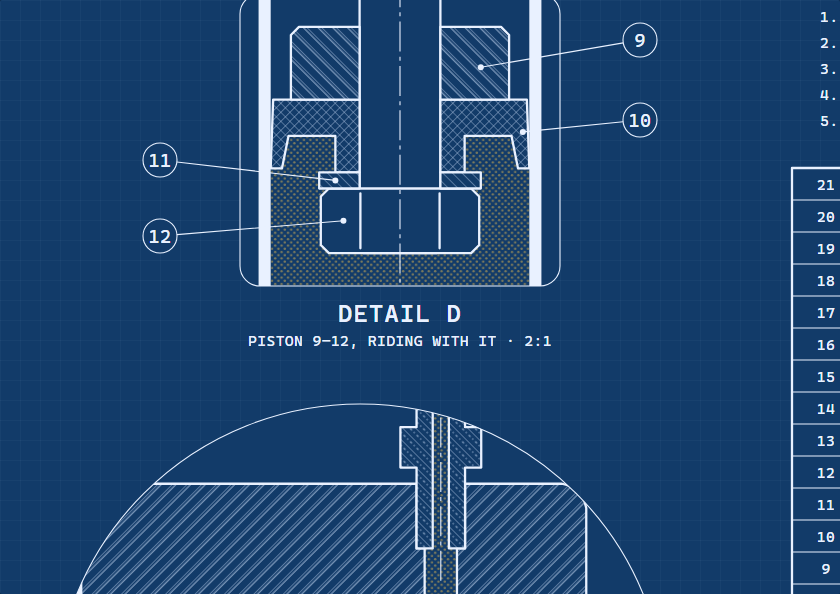
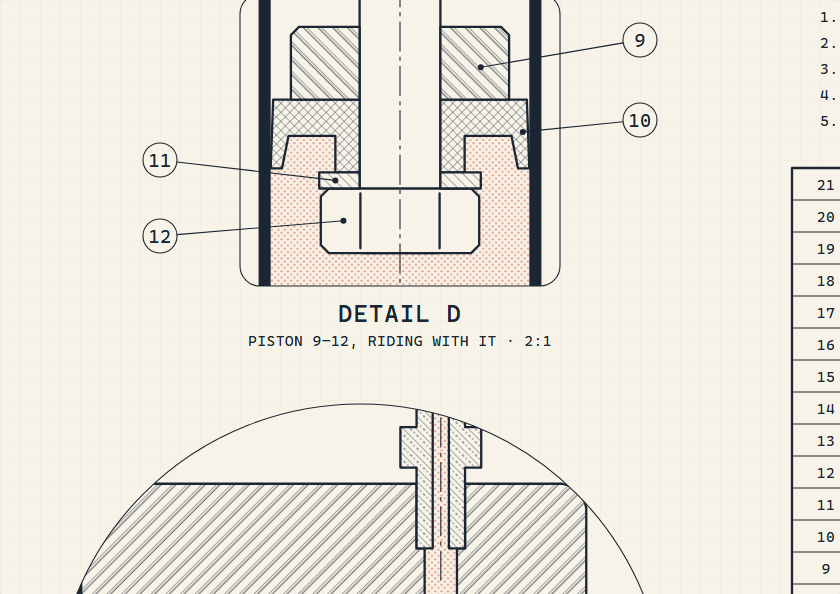
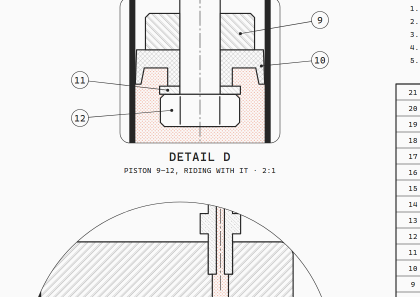
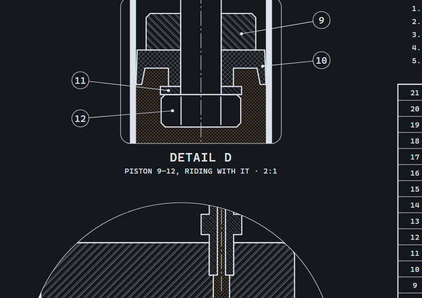

Name a mechanism, or an idea, and Claude drafts the drawing that explains it.


Most explanations of how something works are boxes and arrows. A drafting office never drew boxes. It drew the thing itself, cut open along the plane where the mechanism lives, with every part named, measured and made of something.
howitworks is a skill for Claude Code that does this. You name a mechanism or an idea, Claude picks the real object whose working is the idea, and drafts it as a live A2 engineering sheet: a section through the mechanism, details at larger scale, dimensions, balloons, a parts list and a title block. Then the parts move, and every number on the sheet comes from one physical model.
Boyle's law · 2 bar → 6.8 bar · dead volume 10.1 cm³
This is the base of a bicycle floor pump, cut in half. Press Space to pump: the air, stippled orange, thickens as the piston comes down, and the steel ball lifts off its seat the moment the chamber passes tyre pressure, because it is the outlet valve. Drag to turn it; press E to take it apart.1
Behind it is a full engineering drawing: an A2 sheet with the section at 1:2.5, two details, a gauge view, a P–s diagram, 21 balloons, a parts list and a title block, all live. howitworks draws both.
▶ The cut is the explanation, the launch film · 1 min, sound on · four other cuts ↓
Sections, not diagrams01
The skill rests on one rule, written at the top of its instructions above everything else:
The cut is the explanation.
SKILL.md, "The one idea that matters"
Claude has to choose a real, well-made object whose mechanism is the concept, then choose the one cutting plane that exposes it: the bore, the seat, the spring, the passage.
2Every sheet's model is pure functions with no DOM, so the build, the page and the check all agree.A sheet fails in two ways. A diagram dressed as a drawing: boxes with hatching and arrows with dimension heads. A drawing that shows nothing: the outside of a closed casing. The cure for both is the same: real parts, made of real materials, that touch and hold each other, cut open.2
Some ideas map almost by themselves. A rate limiter is a cistern with a fixed refill jet. Debounce is a door closer: every push restarts the closing. A circuit breaker is, well, a circuit breaker, and its three states are the software pattern's three names.
 Floor pumpCompression · 3D
Floor pumpCompression · 3D
 Four-stroke enginePipeline stages · 3D
Four-stroke enginePipeline stages · 3D
 Flyball governorFeedback control · 3D
Flyball governorFeedback control · 3D
 Lever escapementClock tick · 3D
Lever escapementClock tick · 3D
 Bottle jackLeverage · 3D
Bottle jackLeverage · 3D
 WC cisternRate limiting · 3D
WC cisternRate limiting · 3D
 Door closerDebounce · 3D
Door closerDebounce · 3D
 Pin tumbler lockAuthentication · 3D
Pin tumbler lockAuthentication · 3D
 Circuit breakerCircuit breaker · 3D
Circuit breakerCircuit breaker · 3D
 Wax thermostatSetpoint control · 3D
Wax thermostatSetpoint control · 3D
 Relief valveBack-pressure · 3D
Relief valveBack-pressure · 3D
 DifferentialLoad balancing · 3D
DifferentialLoad balancing · 3D
 Shock absorberLow-pass filter · 3D
Shock absorberLow-pass filter · 3D
 Click penState machine · 3D
Click penState machine · 3D
 Centrifugal pumpOperating point · 3D
Centrifugal pumpOperating point · 3D
 Gear pumpBatching · 3D
Gear pumpBatching · 3D
 CarburettorBernoulli · 3D
CarburettorBernoulli · 3D
 Pressure cookerInterlock · 3D
Pressure cookerInterlock · 3D
 Solenoid valveAmplification · 3D
Solenoid valveAmplification · 3D
 Stirling engineHeat engine · 3D
Stirling engineHeat engine · 3D
 Disc brakeReplication · 3D
Disc brakeReplication · 3DNone of these were drawn by hand. Each one started from a single line naming the object or the idea. There are 21 so far, all live in the collection.
Writing a prompt02
The prompt is the idea, not the drawing. "Explain how a token bucket rate limiter works" is enough; deciding that it should be a WC cistern is the part Claude is asked to do.
A few words change what you get:
paper · darksetstillpapersetdarkYou don't always need the command. The skill's description covers any request for a blueprint, a cutaway, a technical drawing or a "how it works" sheet, so Claude reaches for it on its own.3
What Claude does03
Between your line and the finished sheet, Claude works through a fixed order. The model and the parts list are written before a single line is drawn.
- 01Size it. A Sheet is one assembly with 15 to 30 parts and 3 to 5 views; a Set is several sheets. Sheets are built without asking.
- 02Truth first. Write the model: real dimensions, real physics, pure functions. The geometry, the dimensions, the readout and the chart all read it.
- 03Choose the object and the cut. One sentence on what moves and what that motion means, and the one cutting plane that shows it.
- 04Parts list. Every part numbered, with its standard size, a real material grade and a quantity.
- 05Plan the sheet. A main section at a standard scale, details where the mechanism is small, a view in a named direction, a diagram. All laid out in sheet units first.
- 06Geometry once. Each part is a function that draws into any view in millimetres of the real object, so a detail is the same code at a larger scale.
- 07Draw by the rules. Thick visible edges, thin everything else, hatching by material, shafts and balls left uncut, thin walls blacked in.
- 08Annotate. Dimensions measured from the geometry, a balloon on every part, words only where a drafter would put them.
- 09One accent. Exactly one thing gets colour: what to watch, usually the working fluid, its density following pressure.
- 10Make it live. Critically damped motion, an idle tour, drag and keys, dimensions that re-measure, a readout in the title block.
- 11Check it like a checker. A headless browser plays the tour to a dozen moments and fails on any collision; then Claude reads 4× close-ups of every junction.
| Size | What it is | Parts | Time |
|---|---|---|---|
| Sheet | One A2: main section, details, a view, a diagram, parts list, title block | 15–30 | about 1 h |
| Set | Several sheets of one machine | 40+ | several hours |
Anatomy of a sheet04
These are the rules a drafting checker would mark you down for, from ISO 128, 129, 5455 and 7200. The kit makes them easy, and the check makes them hard to break.
The plane goes through the mechanism. If the reader can't see it, it isn't explained.
Visible edges thick, everything else thin, 2:1. Hidden, centre and phantom lines by ISO 128.
Steel, iron, aluminium, brass, rubber and plastic each have a pattern; touching parts never share an angle.
Shafts, pins, bolts, nuts, balls and ribs are drawn whole, as a drafter would.
Every dimension is computed from the points it spans. A live one re-measures every frame.
A dot on the part, a leader and a number that matches the parts list. The check fails if the dot misses.
Colour only for the subject: the air, the oil, the steam. The chart's curve wears it too.
The readout, the dial, the curve and the drawing read one model, so they can't disagree.
Here they are on one whole sheet: a bicycle floor pump, drafted at 1:2.5 with two details, a gauge view, a P–s diagram, 21 balloons, a parts list and a title block whose readout is live. Drag the handle and the stroke dimension re-measures itself.
Flat and solid05
Every sheet is a flat drawing first, because a flat section is where dimensions, scales and standards live. Here is the same kind of mechanism, a watch escapement, drawn flat at 20:1 and still running:
Then, where shape and assembly are the point, Claude builds a solid view from the same numbers: turned with the mouse, cut along the drawing's own section plane with hatched faces, and pulled apart into an exploded view. Add 3d to the request. Every sheet in the collection has one; open any of them below, then drag to turn it, press E to take it apart.
Four-stroke enginePipeline stagesFlyball governorFeedback control Lever escapementClock tick
Lever escapementClock tick Bottle jackLeverage
Bottle jackLeverage WC cisternRate limiting
WC cisternRate limiting Door closerDebouncePin tumbler lockAuthentication
Door closerDebouncePin tumbler lockAuthentication Circuit breakerCircuit breaker
Circuit breakerCircuit breaker Wax thermostatSetpoint control
Wax thermostatSetpoint control Relief valveBack-pressure
Relief valveBack-pressure DifferentialLoad balancing
DifferentialLoad balancing Shock absorberLow-pass filter
Shock absorberLow-pass filter Click penState machineCentrifugal pumpOperating point
Click penState machineCentrifugal pumpOperating point Gear pumpBatchingCarburettorBernoulli
Gear pumpBatchingCarburettorBernoulli Pressure cookerInterlock
Pressure cookerInterlock Solenoid valveAmplification
Solenoid valveAmplification Stirling engineHeat engine
Stirling engineHeat engine Disc brakeReplication
Disc brakeReplicationSix sheets, up close06
Six of the sheets that explain software ideas, each a real mechanism doing the same thing.
Rate limitingClose-coupled WC cistern with a diaphragm float valve and a pull-knob drop valve, in sectionToken bucket rate limiting (API rate limits)
DebounceOverhead hydraulic door closer, rack and pinion, EN 1154 size 3, in plan sectionDebounce: act only once the input has stopped for long enough
Circuit breakerB16 miniature circuit breaker (EN 60898-1) cut on its centre planeThe circuit breaker pattern: closed, open, half-open
AuthenticationFive-pin euro-profile half cylinder (DIN 18252, 30/10) and its key in longitudinal sectionAuthentication by matching a secret: every factor must match (AND)
Clock tickSwiss lever watch escapement in plan, with a section through the balance staff and its jewel bearingsTurning stored energy into equal ticks: a clock-driven scheduler, a rate-limited event loop
Load balancingRear-axle open bevel-gear differential in plan section, with the car in a turnSplitting one input between two outputs that may run at different speeds: load balancingTwo big sheets07
Two of the densest sheets. The four-stroke engine runs an Otto cycle at 6000 rpm with valve timing from the cam profiles; the flame grows from the plug and the P–V loop traces live. Drag the crank, or press Space.
The centrifugal pump is cut twice, through the shaft and through the volute. The duty point slides along the pump curve as the speed changes and the valve throttles; below 1674 rpm it can't lift the water and nothing flows.
Where it's useful08
A live section is useful wherever someone needs to see inside something and trust what they see.
Rate limits, debounce, circuit breakers, back-pressure and state machines were mechanisms long before they were code. Draw the machine and the abstraction stops being abstract.
A model you can push. Change one thing and watch the pressure, the curve and the numbers follow, from the same equations.
Show what's inside: the seal, the valve, the spring. A live section sells engineering better than a render.
Real part names, standard sizes, material grades and a parts list that matches a teardown.
Four themes09
Colours are tokens, never values, so every sheet comes in four themes: blueprint, paper, white and dark. Pick one in the sheet's bar, or add ?theme= to its address.




The launch film was cut in other styles too. Each is about a minute, with a voice-over, and they're on the release page.
In your code10
A sheet is a single HTML file: inline SVG, inlined CSS and plain JavaScript. Embed one anywhere:
<iframe src="floor-pump.html?theme=white" style="width:100%;aspect-ratio:1200/905;border:0"></iframe>
The drafting kit is pure functions that return SVG strings, so it runs in Node and in the page:
npm install howitworks
import * as K from "howitworks/kit/draft";
const V = K.view({ x: 190, y: 780, scale: 1 / 2.5 });
const barrel = K.revolve([[16, 34], [17.5, 34], [17.5, 384], [16, 384]]);
svg += K.section(V, barrel, { mat: "alu", angle: 45 });
svg += K.dim(V, [-17.5, 384], [17.5, 384], { dir: "h", off: -24, prefix: "Ø" });
Every sheet understands the same addresses:
?t=6.5?theme=white?zoom=x,y,w,h?check=1Install11
One command copies the skill into ~/.claude/skills/howitworks:
npx howitworksAdd --project to install into this project's .claude/skills, or --no-examples for a smaller install. Other ways in:
# the skills CLI (Claude Code, Cursor, Codex and other agents) npx skills add hariFED/howitworks # as a Claude Code plugin /plugin install howitworks --marketplace hariFED/howitworks # or clone it git clone https://github.com/hariFED/howitworks ~/.claude/skills/howitworks
Agents can read the whole project at a glance from llms.txt.
It needs Node.js 20 or later, and Chrome, Chromium or Edge for the checks. Restart Claude Code, then try:
/howitworks explain how a mechanical watch keeps time /howitworks draw a token bucket rate limiter as a machine /howitworks how does a pressure cooker cook faster? /howitworks a section through a bicycle disc brake caliper
Limits12
It takes time. A good sheet is about an hour of Claude's work, most of it in the second look: reading close-ups and fixing what a checker would mark down.
Explanatory, not manufacturing. Proportions, standard parts and materials are real and the physics is a genuine model, but nobody should machine a part from these sheets.
3D is a companion. The 3D view turns, cuts and explodes, but dimensions, scales and the parts list live on the flat sheet. It needs WebGL and a connection to the three.js CDN.
The first sheet is a draft. Look at it, say what's wrong, and ask for another pass. The checker catches collisions; only you know whether the explanation lands.
Questions13
Do I need a framework?
No. A sheet is one standalone HTML file with inline SVG and a few kilobytes of plain JavaScript. Open it from disk, host it anywhere, or put it in an iframe.
Can I edit a sheet afterwards?
Yes. The model, the parts and the page are separate small files. Ask Claude to change a part, a dimension or the tour, then rebuild with node build.mjs.
Is it accessible?
Every sheet has keyboard controls and a polite screen-reader readout of the live numbers. It shows a still, settled frame under reduced motion and pauses when off screen.
How accurate are the drawings?
Proportions, standard parts and materials are real and the physics is a genuine model, but these are explanatory drawings, not manufacturing drawings.
Is the 3D view a separate model?
No. It imports the same model file as the sheet and builds its solids from the same dimensions. It needs WebGL and loads three.js from a CDN; if either is missing it links to the 2D sheet.
How do I get the best results?
Name the real object if you know one, say what you want to watch, and ask for one Sheet first. Then ask for a second look: most problems show up in the close-ups.
What licence?
MIT, for the skill, the kit and every sheet.